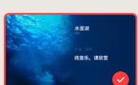

✦ 精工黑金 · 顶级毛玻璃重构
🖥 宽屏电脑视图
📱 手机视图模拟
■ 音乐电台
远征33·幽光秘境
共
3
首曲目 · 频段已接入
刻录
播放器模式
⛶
─
❐
✕
标准
黑胶
歌词
经典
创意
艺术家
好运系列
复古
音波
星座

全屏封面
✓
经典黑胶
✓
For Those Who Come After (Release Date Reveal Trailer)
专辑: Clair Obscur: Expedition 33
歌手: Lorien Testard / Alice Duport-Percier
来源: 远征队bgm
歌词
百科
相似推荐
译
词
···
未接入深空频段
Waiting for signal...
Celestial Audio Station · 320Kbps HD
陨落 伴奏
鲁四月
93%
跨频段迁移歌曲
取消